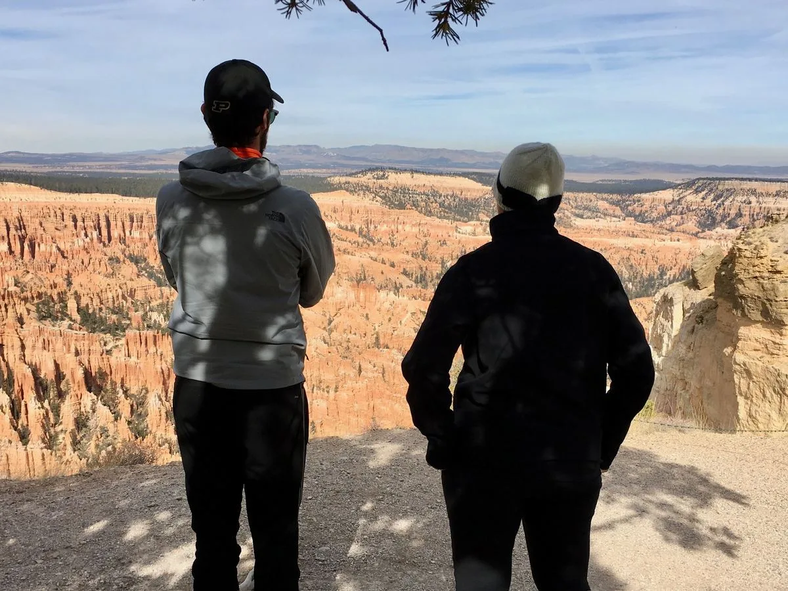
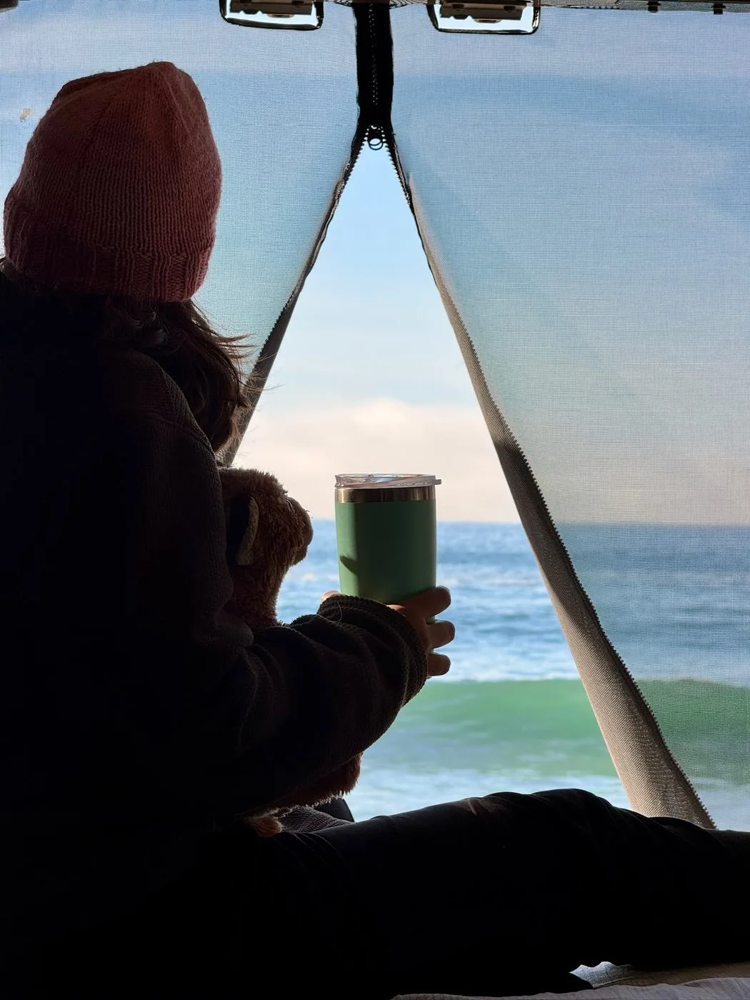

The road ahead · October 18, 2026
Taking the Long Way
Transcontinental Odyssey
Key West to Deadhorse
 PourHouse, Death Valley National Park
PourHouse, Death Valley National ParkTwo people. A home on wheels.
A little more room for the unexpected.
We’re Cassie and David. From our Prius V to our Sprintervan called PourHouse, our trips have grown into a way of life. Next up: Key West to Deadhorse, part of 50,000 miles and a year on the road...

Spencer and Cassie, Bryce Canyon National Park01 / The archive
Field Notes
Six journeys. Each vehicle made a different kind of adventure possible.
Explore the Field Notes PourHouse at sunset, Redington Pass
PourHouse at sunset, Redington Pass02 / The visual record
Gallery
Places we pulled over. Views we stayed for. Photographs from our travels, collected along the way.
Browse the photographs
04 / The people behind PourHouse
About Us
We began with a Prius, upgraded to a minivan, and now we're touring North America in a sprinter van called PourHouse. We preserve the trips, practical lessons, and experiences from the road.
Meet Cassie and David